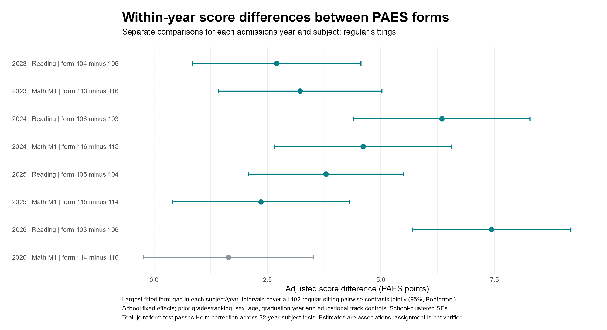

Research diagnostic · 24 October 2026
Do scores vary across PAES forms within a year?
Yes: separate within-year comparisons find small, statistically detectable differences. 13 of 32 regular-sitting year-subject tests reject equal mean scores after Holm correction.
Each test asks whether all form coefficients are equal within one year, sitting and subject. No test asks whether a form is always better, and no common form effect is imposed across years. The multiple-testing correction is conservative across all 32 separate tests.
Largest estimated gap: Reading, admissions 2026 (sat in late 2025), form 103 versus 106: +7.44 points, or 0.060 SD. The simultaneous 95% interval is [5.69, 9.19]. This uses 247,204 students from 3,443 attended schools.
These differences remain in the reported, equated scores. Baseline balance and robustness are consistent with a form advantage, but the available files do not establish randomized assignment. The estimates are conditional associations, not a verified causal effect or a claim that every student benefits equally.

What was tested
Eight tests/modules in each regular admissions process, 2023-2026: Reading, M1, M2, History, and four separate science modules. A supplementary analysis covers PAES winter 2024-2026. Winter admissions 2023 was PDT and is excluded. Form codes are local to a year, sitting and test; do not pool a code across years.
Each form field (FORMA_REG_* or FORMA_INV_*) is paired with its same-sitting *_REG_ACTUAL or *_INV_ACTUAL score. Science modules use the corresponding science score and module-specific positive form identifier. No best-of-sittings score is used. Correct-answer counts are a secondary outcome and are never used as controls for the score outcome: doing so would condition on a consequence of test form.
Adjusted comparisons, regular PAES
The table shows the highest-minus-lowest fitted form contrast within each year/test. Because these pairs were selected from the data, their intervals adjust jointly for all 102 pairwise regular contrasts. The joint test uses all forms, with Holm correction across 32 year-subject tests. Selecting the largest fitted difference tends to exaggerate its point estimate; the simultaneous intervals account for pair selection.
Do the within-year results survive adjustment?
For Reading, the direction of the largest contrast stays the same within each year across the four specifications below. Restricting to current graduates gives a 2026 within-year difference of 8.45 points.
Across all subjects, 12 of 32 current-graduate adjusted tests remain significant after their own Holm correction. No M2 or chemistry year passes the primary regular-sitting correction. M1 does in 2023-2025, but not 2026. This is a test of average score differences; equality of averages would not establish equality throughout the score distribution.
Baseline balance
Within attended schools, form assignments do not show systematic differences in high-school GPA, sex, age, or current-graduate status. No joint baseline test survives Holm correction across all 128 regular-sitting balance tests (or the 72 winter tests). This supports comparability on observed characteristics; it cannot establish balance on unobserved characteristics or replace assignment documentation.
Model and inference
- Separate OLS regression by admissions year, sitting, and subject/module; reported score on form indicators plus attended-school fixed effects.
- Controls: cubic high-school GPA, cubic ranking score, cubic age, sex, graduation-year indicators, and educational-track indicators. Continuous controls are centered/scaled only for numerical stability; outcomes remain PAES points.
- Keep positive form codes and scores 100-1000; positive attended-school RBD; GPA 4-7; ranking score 100-1000; age 14-90; valid recorded sex and graduation year 1930 through the sitting calendar year. Complete-case analysis. Keep schools with at least two observed forms for the relevant sample. No SAE, application or university-enrollment restriction.
- Raw, school-only, and fully adjusted specifications use the same sample. The current-graduate robustness restricts graduation year to admissions year minus one and reapplies within-school form support.
- Regression-derived standard errors cluster by attended school, using the finite-sample correction in fixest. Wald joint tests use F(q, G-1); pairwise intervals use t(G-1). School effects and clustering do not substitute for test-center or test-room information, which is unavailable here.
- The complete coefficient covariance can be numerically singular in nuisance directions involving sparse control categories. Its tiny negative eigenvalues are at machine-rounding scale (relative magnitude below 2.4e-16). No covariance regularization is applied; every tested form block is positive definite.
Supplementary winter results
Only 1 of 24 adjusted winter tests survives Holm correction: biology in admissions 2024. Smaller science samples lose substantial coverage when requiring within-school support; interpret winter estimates as applying to the retained sample.
Sample accounting
Regular samples retain 91.5%-99.2% of takers with valid form and score; winter samples retain 51.4%-94.0%. Three positive-form records have invalid scores and are excluded (one regular M1 in 2023, two winter Reading in 2026). Birth month/year provides age; for winter the age control is measured at December of the same year, a uniform shift absorbed by the cubic specification.
Validation and reproducibility
All 70 validation checks pass. An independent within-school QR regression and cluster sandwich reproduce the headline 2026 Reading coefficients and form standard errors. Source counts, sample accounting, score/form alignment, multiple-testing corrections and simultaneous intervals are checked. Raw inputs and other project analyses were preserved.
Run instructions · All joint tests · All pairwise contrasts · Form-level descriptive statistics · Validation results
Institutional interpretation and sources
DEMRE explicitly states that the exact score depends on the form and that forms are equated: official score transformation explanation. Its winter 2024 results report describes IRT-based calibration/equating and the forms by subject. The regular application manual identifies form, folio, room and desk assignment on candidate labels; the materials inspected do not establish a random assignment mechanism.
Local raw files: A_INSCRITOS_PUNTAJES*PAES*MRUN.csv for 2023-2026 under the project Box raw-data directory; exact paths and metadata are in source_manifest.csv. The corresponding 2023 and 2026 dictionaries define the form codes and same-sitting scores. LOCAL_EDUCACIONAL is an educational-establishment identifier; it was not treated as a test center.
Conclusion: The data support small average form advantages, especially in Reading. Establishing a causal instrument would additionally require the assignment rule and, ideally, test-center/room identifiers. These results do not measure university-admission effects.